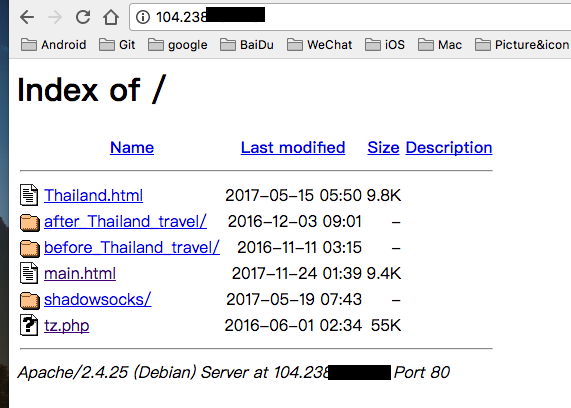

apache2配置
1.相关的命令
2.如果没有 index.html ,让用户不能看到 Directory.
1.相关的命令
~# /etc/init.d/apache2 status
~# /etc/init.d/apache2 start
~# /etc/init.d/apache2 stop
~# /etc/init.d/apache2 restart
2.如果没有 index.html ,让用户不能看到 Directory.
1.https://wiki.apache.org/httpd/DirectoryListings 2.Options 解析: http://www.365mini.com/page/apache-options-directive.htm 3.发现 修改文件中的
Indexesto-Indexes会出错，apache2无法加载.!!!
- 1.删除 apache2.conf 文件 中的 Indexes
# vi /etc/apache2/apache2.conf
一开始为:
<Directory /var/www/>
Options Indexes FollowSymLinks
AllowOverride None
Require all granted
</Directory>
变为
<Directory /var/www>
Options FollowSymLinks
AllowOverride None
Require all granted
</Directory>
- 2.删除
/etc/apache2/sites-available/000-default.conf中的Indexes
to<Directory /var/www/webside/> Options Indexes FollowSymLinks MultiViews AllowOverride None Order allow,deny allow from all </Directory><Directory /var/www/webside> Options FollowSymLinks MultiViews AllowOverride None Order allow,deny allow from all </Directory>
3.然后重启
4.效果图 